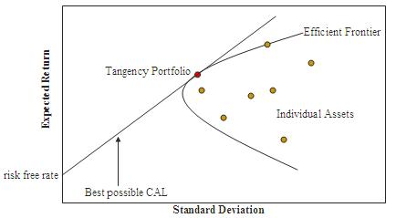

Reinforcement Learning Portfolio Optimization for FX Trading
Abstract
The work is about reinforcement learning application in trading on the FX market. The author starts with describing the FX market, analyzing market organization, participants, and changes in the last years. He tries to explain current trends and the possible directions. The next part consists of theoretical pattern for the research - description of financial models, and the AI algorithms.
Implementation of the RL-based approach in the third chapter, based on Q-learning, gives spurious results.
Introduction
The conventional representation of trading floors as chaotic environments characterized by vocal trader interactions was historically accurate approximately three decades ago. However, the financial industry has since undergone substantial structural transformation.
The financial sector has consistently functioned as an early adopter of computational innovations. This technological integration represents a strategic imperative—competitive advantage through advanced technological implementation frequently correlates with enhanced financial performance metrics. The industry has systematically pioneered the deployment of state-of-the-art technologies, ranging from sophisticated Bloomberg terminal infrastructure in the 1990s to contemporary blockchain applications and ultra-low latency systems, all oriented toward maximizing operational efficiency1.
Trading entities, functioning as utility-maximizing economic agents, fundamentally aim to optimize market-derived profits. Multiple methodological approaches exist to achieve this objective, with varying degrees of complexity. Notably, Warren Buffett, a statistically significant outlier in investment performance metrics, continues to employ a passive buy-and-hold strategy.
In recent years, methodologies predicated on artificial intelligence and machine learning algorithms have demonstrated increasing significance. This phenomenon correlates with advancements in computational processing capacity, decreasing infrastructure expenditure requirements, and empirical recognition of cognitive biases in human decision-making processes (Arnold2017?). A growing consensus within the literature suggests that algorithmic systems should supplement or potentially supersede human involvement in decision-making and execution processes Turner (2015). The progressive automation of trading activities will likely continue its trajectory in subsequent temporal periods, contradicting the aforementioned stereotypical trading floor representation.
Although machine learning’s theoretical foundations date to the 1950s, its explicit implementation in trading contexts remains relatively limited. For example, in institutional foreign exchange trading, only entities with substantial capital resources and sophisticated quantitative infrastructure have developed effective machine learning trading systems Mosic (2017).
This research investigates potential applications of machine learning—specifically reinforcement learning methodologies—in developing trading systems capable of generating statistically significant positive outcomes.
Currently, most systems documented in academic literature aim to maximize either absolute trading profits or risk-adjusted performance metrics. Despite numerous methodological approaches to create consistently profitable systems utilizing variables derived from financial econometrics, fundamental analysis, or machine learning algorithms, many have demonstrated suboptimal performance due to several factors, including:
- Frequent large drawdowns resulting in excessive performance volatility
- Prohibitive transaction costs rendering strategies economically unfeasible
- Excessive computational complexity, particularly problematic for high-frequency trading implementations
Even when empirical research demonstrates exceptional results, upon publication, any competitive advantage tends to diminish through market efficiency mechanisms. Strategies with persistent alpha-generating capabilities must remain proprietary to maintain their effectiveness.
Work Structure
This thesis is structured to provide a comprehensive analytical framework for understanding reinforcement learning algorithms applied to trading contexts.
The first section provides a detailed examination of the intersection between artificial intelligence methodologies and financial markets, exploring the historical relationship between quantitative finance and computational science.
The second chapter presents a systematic review of selected literature from quantitative finance, examining both classical equilibrium models such as CAPM (the established paradigm in equity research) and contemporary approaches. This section evaluates the implicit advantages and limitations of various financial models, with particular emphasis on algorithmic trading methodologies employed in comparable research contexts.
The third section analyzes machine learning frameworks, providing a theoretical basis for why reinforcement learning may represent an optimal approach for certain trading applications. It presents a taxonomic comparison of major machine learning categories to elucidate their methodological distinctions, introduces key reinforcement learning concepts with illustrative examples, and addresses potential limitations and implementation challenges associated with these algorithms.
The fourth part details the experimental methodology, including research objectives, data characteristics, experimental design parameters, and empirical results. The primary objective was to develop trading agents capable of statistically outperforming established benchmarks on risk-adjusted performance measures in the foreign exchange market—agents characterized by statistical robustness, adaptive learning capability, and consistent performance metrics. This chapter presents the mathematical formulations and procedural implementations leading to the empirical results, examining each component of the trading system.
The implemented algorithms utilize a dynamic optimization approach. Beyond a value function based on Differential Sharpe Ratio, the system incorporates various technical indicators such as Relative Strength Index to inform algorithmic decision-making processes. The methodology incorporates transaction cost models to simulate realistic trading conditions.
The value function integrates multiple statistical measures, including Sharpe and Differential Sharpe Ratios, to capture both risk and return dimensions. The algorithm outputs agent actions in the discrete action space {-1,0,1}. The final section of this chapter evaluates the reinforcement learning-based trading system against two benchmark methodologies:
- A buy-and-hold strategy (maintaining consistent long positions in selected currency pairs)
- Random action generation—producing stochastic values in the domain of {-1,0,1} to determine positions in underlying pairs. This benchmark excludes transaction costs, as such a strategy would incur prohibitive cumulative costs with position changes occurring in approximately two-thirds of states.
The concluding section presents a comparative analysis with similar research and proposes directions for future investigation, addressing research questions such as:
- What additional implementations could enhance performance metrics?
- What methodological limitations were encountered and how might they be addressed in subsequent research?
FX Market Organization
Explaining the institutional structure of FX market requires introducing formal definitions of market organization. According to Lyons Lyons (2002), these are:
- Auction market - a participant can place a market and a limit order. The first action is aimed at buying X units at the best price. Alternatively, limit orders set a threshold, i.e. they are executed only if the market quotes reach a certain price. Limit orders are aggregated into an order book
- Single dealer market - in this kind of market organization, there is just one dealer. It is obliged to quote an asset, i.e. to match demand and supply. Its quotations are always the best bid and the best ask. The main task is to manage the risk to make profit off his spread.
- Multiple dealer market - it is extension of single dealer market. There is more than one dealer and they compete against each other. It might be centralized or decentralized. In the first version, all dealers are put into the same location while in the second it is not the case. When the market is decentralized, it is possible for price takers to gain profits by arbitrage transactions.
The FX market is a kind of decentralized multiple-dealer market. There is no single indicator that would show the best bid and the best ask. Hence, the market transparency is low. It is especially important at tail events. It is hard to determine when the market was at a given time and findings are usually spurious.
The foreign exchange market is perceived as the largest and most liquid one, with a year-on-year turnover of trillion.
The FX market is an over the counter, global (OTC) market, i.e. participants can trade currencies with relatively low level of legal obstacles. The market core is built up by the biggest banks in the world. Hence, the FX organization is often referred as an inter-bank market. The participants of the FX market differ by access, spreads, impact, turnover they generate, order size, and purpose. They can be divided into five main groups:
- Central banks - they control money supply, interest and reserve rates and hence can have the strongest market impact. Through their set of tools, they strengthen or weaken local currency. In the developed markets, their turnover is rather small due to the fact that intervenings happen rarely. On the other hand, order size is usually bigger than for other four groups due to the effect they want to achieve.
- Commercial banks - most of the flow in the market belongs to commercial banks. Although the environment in which FX trading occurs is highly dispersed in terms of location, over 85% of flow is generated by top 15 banks, as seen in \(\ref{table_turnover_banks}\). It can be observed even for currencies that the banks do not have real interest in. It means that in fact banks stay with flat position. Commercial banks make money on effective risk management. Essentially, it means taking flows from clients (retail/institutional) and managing risk books. Over the years, the market have changed dramatically. Even though turnovers are higher than ten years, market practitioners tend to claim that liquidity has worsen. It is mostly due to the fact that new regulation, internal and external have been introduced. Banks are required to stay with rather small positions, especially in non-G10 currencies. Their approach to risk is much more conservative than it used to be.
- Non-bank financial institutions - their significance as market participants is on the rise. Even though, non-bank financial institutions category is very broad and entities in it are very heterogenous, the most impactful are sophisticated hedge funds focused on effective market making (such as XTX Markets).
- Commercial companies - as price takers they are significantly worse than commercial banks due to the fact they trade bigger size and mainly hedge their main business.
- Retail traders - their main purpose is to speculate. The conditions they receive from financial institutions are generally worse.
| Rank | Bank | Market Share |
|---|---|---|
| 1 | Citi | 16.11% |
| 2 | Deutsche Bank | 14.54% |
| 3 | Barclays | 8.11% |
| 4 | JPMorgan | 7.65% |
| 5 | UBS | 7.3% |
| 6 | Bank of America Merrill Lynch | 6.22% |
| 7 | HSBC | 5.4% |
| 8 | BNP Paribas | 3.65% |
| 9 | Goldman Sachs | 3.4% |
| 10 | RBS | 3.38% |
| 11 | Societe Generale | 2.43% |
| 12 | Standard Chartered | 2.4% |
| 13 | Morgan Stanley | 1.97% |
| 14 | Credit Suisse | 1.66% |
| 15 | State Street | 1.55% |
In the last years, there have been observed shifting towards eFX (electronic trading of FX). Commercial banks, as mentioned in the previous subsection, are subject to new regulations. Therefore, right now they are more concerned about increasing their turnover than benefiting off speculation, e.g. trading based on macro research. eFX helps in this goal. It requires more technology while a number of traditional dealers is effectively reduced. The activity require quantitative analysts, “quants”, who can manage pricing engines in order to maximize profit while staying within risk constraints. Over the last 4 years, eFX gained 13 percent point and in 2015 for the first time surpassed voice trading, with 53.2% of client flow share (JeffPatterson2015?) (Chung2015?).
Selected financial market models and theory
The following chapter introduces articles that correspond with the subject of the current thesis and are considered as fundamentals of modern finance. Specifically, the beginning contains financial market models. The next subchapter includes basic investment effectiveness indicators that implicitly or explicitly result from the fundamental formulas from the first subchapter.
Capital Asset Pricing Model
Works considered as a fundament of quantitative finance and investments are Sharpe (1964), Lintner (1965), and Mossin (1966). All these authors, almost simultaneously, formulated Capital Asset Pricing Model (CAPM) that describes dependability between rate of return and its risk, risk of the market portfolio, and risk premium. Assumptions in the model are as follows:
- Decisions in the model regard only one period,
- Market participants has risk aversion, i.e. their utility function is related with plus sign to rate of return, and negatively to variance of portfolio rate of return,
- Risk-free rate exists,
- Asymmetry of information non-existent,
- Lack of speculative transactions,
- Lack of transactional costs, taxes included,
- Market participants can buy a fraction of the asset,
- Both sides are price takers,
- Short selling exists,
Described by the following model formula is as follows: \[ E(R_P)=R_F+\frac{\sigma_P}{\sigma_M}\times[E(R_M)-R_F] \] where:
- \(E(R_P)\) – the expected portfolio rate of return,
- \(E(R_M)\) – the expected market rate of return,
- \(R_F\) – risk-free rate,
- \(\sigma_P\) – the standard deviation of the rate of return on the portfolio,
- \(\sigma_M\) – the standard deviation of the rate of return on the market portfolio.
\(E(R_P)\) function is also known as Capital Market Line (CML). Any portfolio lies on that line is effective, i.e. its rate of return corresponds to embedded risk. The next formula includes all portfolios, single assets included. It is also known as Security Market Line (SML) and is given by the following equation: \[ \label{eq:erl} E(R_i)=R_F+\beta_i\times[E(R_M)-R_F] \] where:
- \(E(R_i)\) – the expected \(i\)-th portfolio rate of return,
- \(E(R_M)\) – the expected market rate of return,
- \(R_F\) – risk-free rate,
- \(\beta_i\) – Beta factor of the \(i\)-th portfolio.
The Modern Portfolio Theory
The following section discuss the Modern Portfolio Theory developed by Henry Markowitz Stulz (1995). The author introduced the model in which the goal (investment criteria) is not only to maximize the return but also to minimize the variance. He claimed that by combining assets in different composition it is possible to obtain the portfolios with the same return but different levels of risk. The risk reduction is possible by diversification, i.e. giving proper weights for each asset in the portfolio. Variance of portfolio value can be effectively reduced by analyzing mutual relations between returns on assets with use of methods in statistics (correlation and covariance matrices). It is important to say that any additional asset in portfolio reduces minimal variance for a given portfolio but it is the correlation what really impacts the magnitude. The Markowitz theory implies that for any assumed expected return there is the only one portfolio that minimizes risk. Alternatively, there is only one portfolio that maximizes return for the assumed risk level. The important term, which is brought in literature, is the effective portfolio, i.e. the one that meets conditions above. The combination of optimal portfolios on the bullet.
 The Markowitz concept is determined by the assumption that investors are risk-averse. This observation is described by the following formula:
\[ E(U)<U(E(X)) \] where:
- \(E(U)\) – the expected value of utility from payoff;
- \(U(E(X))\) – utility of the expected value of payoff.
The expected value of payoff is given by the following formula: \[ E(U)=\sum_{i=1}^{n}\pi_iU(c_i) \] where:
- \(\pi_i\) – probability of the \(c_i\) payoff,
- \(U(c_i)\) – utility from the \(c_i\) payoff.
One of the MPT biggest flaws is the fact that it is used for ex post analysis. Correlation between assets changes overtime so results must be recalculated. Real portfolio risk may be underestimated. Also, time window can influence the results.
Efficient Market Hypothesis
In 1965, Eugene Fama introduced the efficient market term. Fama claimed that an efficient market is the one that instanteneously discounts the new information arrival in market price of a given asset. Because this definition applies to financial markets, it determined the further belief that it is not possible to beat the market because assets are correctly priced. Also, if this hypothesis would be true, market participants cannot be better or worse. Their portfolio return would be a function of new, unpredictable information. In that respect, the only role of an investor is to manage his assets so that the risk is acceptable. Fama (1965)
It is highly unlikely that EMH exists in its strongest form due to successful quantitative hedge funds that consistetly beat the markets. For instance, Renaissance Capital hedge fund generated on average 40% per annum in the last 30 years Shen (2017).
Formally, Efficient Market Hypothesis states that a market is efficient with respect to information set \(F_t\) if its impossible to make economic profits by trading on the basis of that information set. In other words, it is not possible to achieve any better than risk-adjusted average rate of return. In its essence that claim is consistent with classical price theory Weber (2012). Over time, other versions (forms) of the EMH has been introduced - weak, semi-strong, and strong Fama, E. F.;Malkiel (1970).
What means that there is not possibility to make abnormal returns by using the past price movements and volumes to predict the future price movements. However, fundamental analysis might be used to generate such results because the market is not perfect in spotting undervalued and overvalued stocks. Hence, the participants can find profitable companies by researching their financial statements.
It states that neither technical, nor fundamental analysis cannot be exploited for gaining superior returns, and only non-public material information might help in above average results.
The strong form rejects the idea of any possibility to consistently beating the market. According to this idea, any kind information, public or non-public, is completely embedded into current financial asset prices. In other words, there is no advantage for anyone in the market. Returns that deviate from expected values are attributed to pure randomness.
Critic of strong form of the EMH
There are at least a few documented anomalies that contradicts with efficient market hypothesis. For example, price/earnings (P/E) measure can help in systematically outperforming stocks Malkiel (2003). The neglected firm effect claims that “uninteresting” companies, often ignored by market analysts are sometimes incorrectly priced, and offer investors potentially fruitful opportunities. Another phenomenon that cannot be explained by the strong form of EMH is so called the January effect Haug and Hirschey (2006). According to the authors of “The January Effect” working paper, returns reached in January has predictive power for the upcoming 11 months. It persists for both small and large cap companies.
Although the strongest form in its essence is justified, logically correct, it is rather unlikely that it explains the reality, even due to the effects mentioned above.
Selected investment performance measures
Introduced articles does not include any indicator that would explicitly measure portfolio management effectiveness. Equations that result from the authors’ work are important because some of further developed measures are CAPM-based. The most known are the Sharpe ratio, the Treynor ratio, and the Jensen’s alpha. Popularity of these indicator comes from the fact that they are easy to understand for the average investor. Marte (2012) In Sharpe (1966), the author introduced the \(\frac{R}{V}\) indicator, also known as the Sharpe Ratio (\(S\)), which is given by the following formula: \[ S_i=\frac{E(R_i-R_F)}{\sigma_i} \] where:
- \(R_i\) – the \(i\)-th portfolio rate of return,
- \(R_F\) – risk-free rate
- \(\sigma_i\) – the standard deviation of the rate of return on the \(i\)-th portfolio.
Treynor (Treynor1965) proposed other approach in which denominator includes \(\beta_i\) instead of \(\sigma_i\). The discussed formula is given by: \[ T_i=\frac{R_i-R_F}{\beta_i} \] where:
- \(R_i\) – the \(i\)-th portfolio rate of return,
- \(R_F\) – Risk-free rate
- \(\beta_i\) – Beta factor of the \(i\)-th portfolio.
Both indicators, i.e. \(S\) and \(T\) are relative measures. Their value should be compared with a benchmark to determine if a given portfolio is well-managed. If they are higher (lower), it means that analyzed portfolios were better (worse) than a benchmark. The last measure, very popular among market participants, is the Jensen’s alpha. It is given as follows: \[ \] where:
- \(R_i\) – the \(i\)-th portfolio rate of return,
- \(R_F\) – Risk-free rate
- \(\beta_i\) – Beta factor of the \(i\)-th portfolio.
The Jensen’s alpha is an absolute measure and is calculated as the difference between actual and CAPM model-implied rate of return. The greater the value is, the better for the \(i\)-th observation.
The differential Sharpe ratio - this measure is a dynamic extension of Sharpe ratio. By using the indicator, it can be possible to capture a marginal impact of return at time t on the Sharpe Ratio. The procedure of computing it starts with the following two formulas: \[ A_n=\frac{1}{n}R_n+\frac{n-1}{n}A_{n-1} \] \[ B_n=\frac{1}{n}R_n^2+\frac{n-1}{n}B_{n-1} \] At \(t=0\) both values equal to 0. They serve as the base for calculating the actual measure - an exponentially moving Sharpe ratio on \(\eta\) time scale. \[ S_t=\frac{A_t}{K_\eta\sqrt{B_t-A_t^2}} \] where:
- \(A_t=\eta R_t+(1-\eta)A_{t_1}\)
- \(B_t=\eta R_t^2+(1-\eta)B_{t_1}\)
- \(K_\eta=(\frac{1-\frac{\eta}{2}}{1-\eta})\)
Using of the differential Sharpe ratio in algorithmic systems is highly desirable due to the following features Moody, John E.; Wu (1997):
- Recursive updating - it is not needed to recompute the mean and standard deviation of returns every time the measure value is evaluated. Formula for \(A_t\) (\(B_t\)) enables to very straightforward calculation of the exponential moving Sharpe ratio, just by updating for \(R_t\) (\(R_t^2\))
- Efficient on-line optimization - the way the formula is provided directs to very fast computation of the whole statistic with just updating the most recent values
- Interpretability - the differential Sharpe ratio can be easily explained, i.e. it measures how the most recent return affect the Sharpe ratio (risk and reward).
The drawdown is the measure of the decline from a historical peak in an asset. The formula is given as follows:
\[ D(T)=\max\{max_{0, t\in (0,T)} X(t)-X(\tau)\} \]
The Sterling ratio (SR)
The maximum drawdown (MDD) at time \(T\) is the maximum of the Drawdown over the asset history. The formula is given as follows:
\[ MDD(T)=\max_{\tau\in (0,T)}[\max_{t\in (0,\tau)} X(t)-X(\tau)] \]
In this chapter term machine learning and its subfields are explained. Discussion also contains possible applications for trading financial instruments.
Machine Learning
As the field evolves, there are many definitions of machine learning sources provide. In this subchapter, the author has arbitrarly selected definitions that accurately captures the spirit of the discipline. What is machine learning then? The most accepted and widely used definitions are as follows:
- “Field of study that gives computers the ability to learn without being explicitly programmed.” - Arthur Samuel, a pioneer in machine learning and computer gaming Samuel (1959)
- “A computer program is said to learn from experience \(E\) with respect to some class of tasks \(T\) and performance measure \(P\), if its performance at tasks in \(T\), as measured by \(P\), improves with experience \(E\).” - Tom Mitchell, a computer scientist and E. Fredkin University Professor at the Carnegie Mellon University (CMU) Mitchell (1997)
Especially the latter is considered as an elegant and modern definition. Less formal, but also relevant remarks, comes from two authors of textbooks from the discipline:
- “Pattern recognition has its origins in engineering, whereas machine learning grew out of computer science. However, these activities can be viewed as two facets of the same field…” - Christopher Bishop
- “One of the most interesting features of machine learning is that it lies on the boundary of several different academic disciplines, principally computer science, statistics, mathematics, and engineering. …machine learning is usually studied as part of artificial intelligence, which puts it firmly into computer science …understanding why these algorithms work requires a certain amount of statistical and mathematical sophistication that is often missing from computer science undergraduates.” - Stephen Marsland Marsland (2009)

Despite many more concepts, ideas, and comments as to what exactly machine learning is, the general goal is the same: Machine learning is about building such models that resemble the reality to a sufficient extent, are optimal in terms of a value function and can be later used for predictions on new data.
Why is machine learning important?
Machine learning helps in solving problems that are difficult or even impossible to solve in a determinisic way. Jason (2013) Sometimes variables can be missing or observed values can contain an embedded error. Traditional models are often prone to be under- or overdetemined. They might not generalize well or are too general. An appropriate machine learning model should contain approximate solution containing only relevant parts.
Classification of machine learning algorithms
In machine learning (ML), tasks are classified into broader categories based on how learning/feedback (\(P\)) is received and/or what kind of problem they solve. One can distinct the following ones:
Supervised Learning - the whole set \((Y_t;X_{t, 1}, ..., X_{t,n})\) is available. The goal is to model the special variable \(Y_t\) using a subset of \(X_t\) variables, i.e. find a functional relationship \(Y_t = f(\mathbb{X_t})\) between the input variables and the output variables which minimizes a predefined loss function \(g(f(\mathbb{X}_t);Yt)\). The structural form of this relationship is constrained by the class of functions considered. For example we can assume that there is a linear relationship between input and output variables and a square loss function, then the problem becomes: \[\min_{b1\dots bn}\mathbb{E[}(Y_t-(b_1X_{t,1}+\dots+b_nX_{t,n}))^2]\]
The utilized estimation method above is called least squares method for linear regression. Even though it is considered a simple one, it sometimes provides sufficient results. Other popular methods for supervised learning are:
- K-nearest neighboors, Neural Networks,
- SVM - Support Vector Machines,
- Random Forests
Unsupervised learning - it is the category that deals with only \(\mathbb{X_t}\) set. In other words, The goal is to find patterns among the dataset and categorize observations. The most popular methods are:
- Clustering - based on finding groups of instances which are similar as possible to observations from the same groups while as different as possible to observations from other ones
- Feature extraction - this subcategory of unsupervised learning consists of methods for extracting relevant variables from a set of variables \(\mathbb{X}_t\). Often, a subset of a dataset can contain a similar amount of information as the original one while reducing dimensionality so that a model computation is much faster and efficient. improves the model in Occam’s Razor sense.
- Anomaly detection - this type helps in identification of observations that are outliers and should be carefully investigated. Sometimes the whole variable needs to be transformed or spotted observations must be removed due to their invalidity.
Reinforcement Learning - it is probably the most intuitive category of ML in terms of what people implicitly believe to be artificial intelligence. According to (Silver2017?), it captures influences from disciplines such as engineering, economics, mathematics, neuroscience, psychology and computer science. Algorithms in reinforcement learning maximize long-term cumulated reward and interacts with the environment, i.e. are convenient when a problem is not stationary.
The two most specific features of reinforcement learning algorithms are trial-and-error and delayed rewards what means that this type of ML uses training information to evaluate the actions rather than instructs by giving definitive actions. This is what distinguishes reinforcement learning from supervised learning and is one of the reasons why it is considered as a subfield in ML. Moreover, it does not base on a training set of labeled examples. In SL, each observation is strictly specified as to what an algorithm should do. For instance if blue balls according to the model should be in blue basket, they will always end up there. Supervised learning goal is to generalize well on the training data so that the formula works also for the test data. It is important and the most researched area of ML nowadays, however it is not enough when interaction between an agent and an environment take place. In such problems an agent should learn from its own actions, sense states, and gain experience.
Reinforcement learning need to be distincted from unsupervised learning as well. UL is focused on finding structures not explicitly given by collections of unlabeled datasets. It sounds similar, but it is far from RL, where the whole idea is to maximize sum of reward signals. Finding data patterns might be useful (as stated in the bullet point about unsupervised learning), but it does not solve a RL problem. Hence, the approach analyzed in the thesis should be considered as a next paradigm, seperated paradigm. The only feedback an agent receives is a scalar reward. The goal of it is to maximize long-run value function which consists of summed up (discounted) rewards in subsequent states. The goal of the agent is to learn by trial-and-error which actions maximize his long-run rewards. The environment changes stochastically and in some cases interacts with the agent. The agent must choose such a policy that optimizes amount of rewards it receives. The design must capture this fact by adjusting the agent so that it does not act greedily, i.e. it should explore new actions instead of exploiting existing optimal (possibly suboptimal) solutions.
Selected aspects of reinforcement learning
In the following section the author discussed relevant aspects and challengees of the paradigm.
Exploration/exploitation
One of the most important problems in RL is the trade-off between exploration and exploitation. To maximize cumulated rewards an agent should take actions that worked in the past and caused bigger payoffs (exploit). At the very beginning of learning process it never knows what works well, though. Hence, it needs to discover desirable actions for its state (explore). The dilemma is unresolved as of now, there are at least a few approaches to tackle the problem, though. In the next subsection the author presents that possible methods on the example of Bandit problem.
\(\epsilon\)-greedy policy
The simplest version is to behave greedily most of the time, i.e. an agent selects such action (\(A_t\)) that maximizes the used value function (e.g. \(Q_t(a)\), but sometimes, with probability of \(\epsilon\) pick up a random action from those available, apart from the action value estimates. Such an algorithm guarantees that every action for every state will be explored and eventually \(Q_t(a)=q_*(a)\). It implies that probability of choosing the most optimal action will converge to more than \(1-\epsilon\), to near certainty. The disadvantage of this simple method is that it says very little of its practical effectiveness. Asymptotic guarantee might take too long in a real environment. It can be shown that small \(\epsilon\) causes the agent to gain more reward at initial steps, but tends to underperform against larger \(\epsilon\) values when number of steps is getting larger.
Optimistic initial values
One of the techniques to improve agent’s choices is based on the idea of encouraging the agent to explore. Why is that? If the actual reward is smaller than initially set up action-value methods, an agent is more likely to pick up actions that potentially can stop getting rewards that constantly worsen value function \(q(a)\). Eventually, the system does a lot more exploration even if greedy actions are selected all the time.

Upper-Confidence-Bound Action Selection
The other method for handling the exploration/exploitation problem is by using the special bounds that narrow with the number of steps taken. The formula is as follows:
\[A_t = arg\max_a[Q_t(a)+c\sqrt\frac{ln_t}{N_t(a)}\] where:
- \(ln_t\) is the natural logarithm of $t%
- $N_t(a) - the number of times that action a has been selected prior to time \(t\)
- \(c\) - the exploration rate
The idea of this soltuion is that the square-root part is an uncertainty measure or variance in the \(a\) estimation. The use of the natural logarithm implies that overtime square-root term, so does the confidence interval, is getting smaller. All actions will be selected at some point, but the ones with non-optimal values for \(Q(a)\) are going to be selected much less frequently over time. UCB performs well, but it is harder to apply (generalize) for a broader amount of problems than \(\epsilon\)-greedy algorithm. Especially, when one is dealing with nonstationary problems. In such situations, algorithms more complex than those presented in this subsection should be selected.
Reinforcement learning algorithms can be classified into three general subcategories:
- Model Based - they are based on the idea that an model of the environment is known. Actions are chosen by searching and planning in this model. Markov Decision Process (MDP) is a typical example of such method since it requires knowledge of the Markov transition matrix and reward function.
- Model-free - it uses experience to learn in a direct way from state-action values or policies. They can achieve the same behaviour, but without any knowledge on the world model an agent acts in. In practical examples, reinforcement learning is primarily used for environments where a transition matrix is not known. Given a policy, a state has some value, which is defined as cumulated utility (reward) starting from the state. Model-free methods are generally less efficient than model-based ones because information about the environment is combined with possibly incorrect estimates about state values Dayan and Niv (2008).
Model-based Methods in Reinforcement Learning
- Value iteration - a model-based algorithm that computes the optimal state value function by improving the estimate of \(V(s)\). It starts with initializing arbirary values and then updates \(Q(s, a)\) and \(V(s)\) values until they converge. The pseudocode is as follows:

- Policy iteration - while in the previous bullet the algorithm is improving value function, policy iteration is based on the different approach. Concretely, there are two functions to be optimized \(V^{\pi}(s)\) and \(\pi^{'}(s)\). This method is based on the premise that a RL agent cares about finding out the right policy. Sometimes, it is more convenient to directly use policies as a function of states. Below is the pseudocode:

Model Free Learning
Model Free learning is a subcategory of reinforcement learning algorithms which are used when a model is not known. The agent improves its accuracy in choosing right actions by interacting with the environment without explicit knowledge of the underlying transition matrix. It fits trading conditions - in financial markets it is impossible to know what the model is and what probabilities in the transition matrix are (they are not stationary). Hence, value or policy iteration algorithm can not be used directly.
Even though, Markov Decision Process and its element are not visible, the agent can gain experience from sampled states. It is assumed that eventually the distribution of sampled states will converge to the one in the transition matrix. So do \(Q(s, a)\) converge to \(Q^{*}\) and \(\pi^{*}\) to the optimal policy. The conditions required by the convergence is that all state-action pairs were visited infinite times and the agent is greedy once it finds the best action in every state.
Components of an reinforcement learning system
Reinforcement learning systems are developed to solve sequential decision making problems, to select such actions that eventually maximize cumulative discounted future rewards. In the following section the author explained components of reinforcement learning on the example of game of chess and trading. The subsection was partially inspired and based on Sutton and Barto (2017).
Environment (\(E\)) - it defines what states and actions are possible. In the game of chess it is the whole set of rules and possible combination of figures on the chessboard. It must be stated that some states are not available and will be never reached. In trading such rules might constitute that for instance the only position an agent can take is 0 or 1, or that weights of assets in a portfolio must sum up to 1.
State (\(s\)) - can be seen as a snapshot of the environment. It contains a set of information in time \(t\) that a RL agent uses to pick the next action. States can be terminal, i.e. the agent will no longer be able to choose any action. In such scenario they end an episode (epoch), a sequence of state-action pairs from the start to the end of the game. For a trading application, a state in time \(t\) can be a vector of different financial measures, such as rate of return, implied/realized volatility, moving averages, economics measures, technical indicators, market sentiment measures, etc.
Action (\(a\)) - givn a current state the agent chooses an action which directs him into a new state, either deterministically or stochastically. The action choice process itself may also be deterministic or based on probability distributions. In the game of chess analogy, an action is to move a figure in accordance to the game’s rules. In trading it could be for instance going long, short, staying flat, outweighing.
Policy (\(\pi\)) - a policy is a mapping from state of the environment to action to be taken in that state. In psychology it is called a set of stimulus, i.e. response rules or associations. The policy might be a lookup table or a simple function (e.g. linear), but not necessarily. Especially in trading where variables are often continous extensive computations to set up a satisfying outcome take place. The policy is the most essential part of a reinforcement learning agent because they determine how it behaves. It may be stochastic. Policies do not imply deterministic nature of the mapping. Even after countless number of episodes and states, there is a chance that an efficient RL algorithm will explore other states rather than by exploiting the then-optimal action
Value Function - it is a prediction of future, usually discounted rewards. Value functions are used for determining how much a state should be desired by the agent. They depend on initial states (\(S_0\)), and a policy that is picked up by the agent. Every state should have an associated value, even if the path it is part of was never explored - in such cases they usually equal to zero. The general formula for value function is as follows:
\[V^\pi=\mathbb{E}_\pi[\sum\limits_{k=1}^\infty \gamma^kr_{t+k}|s_t=s]\]
where \(\gamma\) is a discount factor from the range \([0; 1]\). It measures how much more instant rewards are valued. The smaller it is the more immediate values are relatively more relevant and cause algorithm to be more greedy. Sometimes \(\gamma\) is equal to 1 if it is justified by the design of the whole agent.
Value estimation, as a area of research in RL is probably the most vital one in the last decade. The most important distinction between different RL algorithms lies as to how it is calculated, in what form, and what variables it incorporates.
Reward (\(r\)) - rewards are the essence of reinforcement learning predictions. Value function, as previously stated, is a sum of, often discounted, rewards. Without them, as components of value function, an agent would not be able to spot (or optimal) better policies actions are based on. Hence, it is assumed rewards are the central point, required element, of every RL algorithm. Rewards are always given as a scalar, single value that is retrieved from the environment, that is easy to observe and interpret. With value function it is much harder since it can be obtained only by calculating a sequence of observations a RL agent makes over its lifetime.
Model (\(m\)) - a model shows the dynamics of environment, how it will evolve from \(S_{t-1}\) to \(S_t\). The model helps in predicting what the next state and next reward will be. They are used for planning, i.e. trial-and-error approach is not needed in order to achieving the optimal policy. Formally, it is a set of transition matrices:
\[\mathbb{P}_{ss^{'}}^a=\mathbb{P}[s^{'}|s,a]\] \[\mathbb{R}_s^a=\mathbb{E}[r|s,a]\]
where:
- \(\mathbb{P}_ss^{'}{a}\) is a matrix of probability of transitions from state \(s\) to state \(s^{'}\) when taking action \(a\). Analogously, \(\mathbb{R}_{s}^a\) is an expected value of reward when an agent is in state \(s\) and taking action \(a\)
Limitations
Reinforcement learning is not a panacea for all kinds of ML problems, they should be heavily associated with problems based on states, some policy to determine and defined value function. A state is just a signal that reaches the agent, a snapshot of the environment at a time. Most of pure reinforcement learning methods are oriented about states and their values. Even though it is useful for simpler environments, for more sophisticated ones it is not as easy. First of all, tabular data is not a good way to store information about expected values for states/states-actions. They would not fit into memory as variables are continuous. Hence, some additional approaches must be used in order to solving the problem efficiently.
Research
In the following chapter the author designed a research based on reinforcement learning agents for FX market. The chapter starts with outlining research objectives, then used dataset is explained. In subsequent parts, it is explained how the research was conducted, what elements and methods have been chosen from the previous chapters. The last part consists of results, what exactly have been achieved and if it conforms with expectations.
Research Objective
The primary research goal was to evaluate the Reinforcement Learning-based algorithm for multiasset trading. The main idea behind the algorithm deployment is that it can systematically outperform benchmarks in terms of selected risk and return measures. Designed trading system was aimed to spot non-trivial patterns in data, more efficiently than human, and exploit them accordingly.
In the project author wanted to assess the possibility of using a reinforcement learning agent for trading domain. The objectives are as follows
- Implementation - consisting of creating reinforcement learning-based agent that are capable of trading financial instruments basing on time series tables
- Evaluation - testing if trading agents for out-of-sample periods can outperform benchmarks in the measures provided by the author
- Conclusion - answering the question if such approach might help in generating abnormal positive results and determining if the method can be feasible and efficient in real-like environment
Design of the research
The whole system can be divided into three main parts:
- Data preprocessing - taking FX data from Bloomberg with use of the dedicated API, parsing the data and adjusting it for the further analysis. The system is dedicated for currency trading, however with little adjustments it could fit in other asset classes as well.
- Variable extraction - not all preprocessed currency pairs are relevant and worth adding. For instance, if \(USD/CNH\) is highly correlated with \(USD/CNY\) it is senseless to add the latter to the portfolio. #TO DO
- State-action space - the extracted variables, based on time series for currency pairs, are merged into state space
Assumption
In the work, the author has assumed that:
- Zero slippage - the FX market is liquidity is good enough that there the execution price is equal to the price shown by the venue (Bloomberg)
- Zero market impact - trades executed by the agent are not big enough that they can move the market and cause significant market impact
Data Preparation
The original data set consisted of tick data of 52 currency pairs in three months ( observations) between November, 2017 and March, 2018. There are 3 variables for each of them:
- Timestamp - usually given as a UNIX timestamp (starting from 1st of January of 1970) with precision of milliseconds or microseconds
- Bid price - the highest price that a buyer is willing to pay for a given amount of a currency
- Ask price - the lowest price that a seller is willing to accept for a given amount of a currency
- Mid price - the price calculated as \(MID_PRICE = frac{BID_PRICE + ASK_PRICE}{2}\). Usually rounded up to four or five decimals (depending on currency’s liquidity, value against a non-base currency)
The ticks were left untrasnformed. The purpose was to test the method in a real-life environment. Hence, e.g. aggregating would ruin the initial idea.
Bid and ask prices are taken from Bloomberg’s FXGo platform using R Bloomberg API (RBlpapi) for 1 mio of base currency. Bloomberg covers prices from hundreds of banks and for most currency pairs in the world. Some of them are crossed, with use of Euro or US Dollar, for instance EUR/JPY is the combination of:
\[EUR/JPY = EUR/USD\times USD/JPY\]
Sometimes pairs can effectively consist of 3 parts (legs), for instance PLN/MXN: \[PLN/MXN = (USD/MXN\times EUR/USD)/(EUR/PLN)\]
Using such pairs is usually problematic and reduces reliability in backtesting. Hence, for the purpose of the work only the most liquid pairs, based on G10 currencies, had been used:
- USD - United States dollar
- EUR - Euro
- JPY - Japanese yen
- GBP - Pound sterling
- CHF - Swiss franc
- AUD - Australian dollar
- NZD - New Zealand dollar
- CAD - Canadian dollar
- SEK - Swedish krona
- NOK - Norwegian krona
In eFX the crucial element is spread, calculated as the difference between bid and ask prices. It depends on several factors, such as time of the day, one-off events, volatility, ability of liquidity providers to warehouse risk, or market sentiment. The data source had been selected so that it captured spread and reflected FX market as good as possible.
Below is the glimpse of the data used in the research:
Cols: average spread (in USD), min spread, max spread, average number of ticks, mid price movements
Rows: time of the day, sum
In FX market participants usually get quotes for different levels (tiers). The assumption of the work was to use the smallest one to reduce possible market impact.
Code and the Research Process
The implementation of trading agents was based on R (both base and external libraries).
The graphical presentation was prepared with the use of ggplot2 library.
The R-project consists of:
- frun.R,
- get_data.R,
- cointegration.R,
- attributes.R,
- discretization.R,
- functions.R,
- state_space.R,
- mcc.R,
- q_learning.R
The main part was based on run.R script. Running it merges all above-mentioned scripts and executes the whole experiment.
Bibliography
Footnotes
The banking sector is frequently identified in empirical literature as a primary industry implementing blockchain technology.↩︎